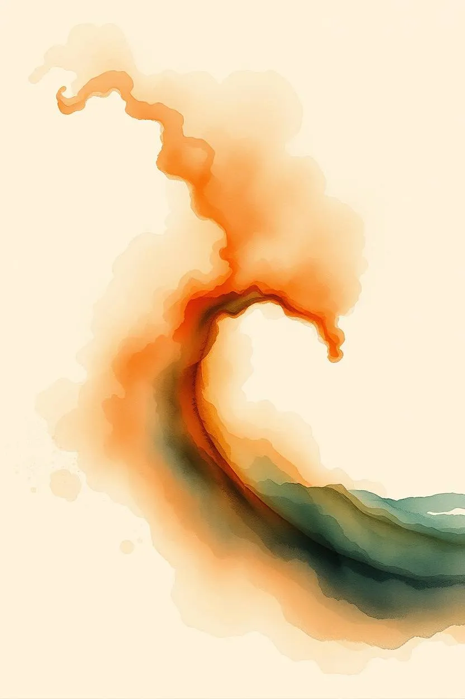

Vielleicht kennst du das: Du wirst richtig wütend, und irgendwo im Hintergrund sagt eine leise Stimme: Atme. Geh einen Schritt zurück. Gib deiner Wut keine Macht.
Doch die Wut brennt mit dir durch und du schreist jemanden an: dein Kind, deinen Partner, einen Kollegen, die Frau an der Supermarktkasse. Hinterher fragst du dich, weshalb du nicht einfach deiner inneren Stimme gefolgt bist.
Die Antwort liegt in etwas, das ich Multidimensionalität nenne. Der Begriff klingt zunächst abstrakt. Doch er erklärt sehr gut, weshalb das Denken so oft an seine Grenzen stößt.
Livesendung vom Sonntag, 1. November 2026, 10 Uhr
„Multidimensionalität als Hindernis und als Weg“ – aus dieser Sendung ist der Artikel entstanden.
Die unterschiedlichen Daseinsebenen
In der Esoterik gehen wir davon aus, dass die physische Welt – das Universum, das sich messen lässt – nicht die einzige Ebene des Seins ist. Du besitzt nicht nur einen physischen Körper, sondern existierst zugleich auf anderen Ebenen, und diese Ebenen beeinflussen dich.
Deine Gedanken und Gefühle entstehen demnach nicht in dir. Gedanken entstehen auf der Mentalebene, und dein Gehirn ist ihr Empfänger. Gefühle entstehen auf der Astralebene, und dein Körper empfängt diese astrale Energie.
Es gibt unterschiedliche Ebenenmodelle. Häufig ist von sieben Ebenen die Rede, von denen fünf für unser Leben besonders wichtig sind:
- Die physische Ebene. Hier gelten die Gesetze der Physik, die Schwerkraft, die lineare Zeit mit einem Gestern, Heute und Morgen.
- Die Energie- oder Ätherebene. Ein riesiges Netzwerk aus Energielinien, das alles miteinander verbindet.
- Die Astralebene. Die Ebene der Gefühle und Begierden, der Träume, der Vorstellungskraft und der Fantasie.
- Die Mentalebene. Die Ebene der Gedanken, Ideen und Ideologien, aber auch der Fähigkeit, abstrakt zu denken, zu analysieren und zu ordnen.
- Die Seelenebene. Hier beginnt die Individualisierung des Menschen.
Wenn man das Wort „Ebene“ hört, denkt man leicht an ein Sandwich: Brot, Butter, Schinken, Käse, Brot – fein säuberlich übereinandergeschichtet. So ist es nicht. Die Ebenen existieren gleichzeitig am selben Ort, nur auf unterschiedlichen Frequenzen. Es ist wie beim Radio: Drehst du am Regler, wechselst du nicht den Ort, sondern den Sender. Und die Ätherebene nimmt sogar eine Sonderstellung ein: Sie ist wie ein großes Meer, in dem alle anderen Ebenen schwimmen. Sie verbindet sie miteinander.
Was ich mit Multidimensionalität meine
Streng genommen ist „Multidimensionalität“ nicht der richtige Begriff, denn alle Ebenen gehören zu einer Dimension. Ich suche bereits seit Jahren nach einem besseren Wort (und nein: Vielschichtigkeit, Multiebenen und dergleichen passen nicht ganz zu dem, was ich vermitteln möchte). Ich bleibe vorerst bei Multidimensionalität, weil der Begriff ein Bild trägt, das mir wichtig ist: Die Ebenen sind voneinander getrennt. Sie folgen eigenen Gesetzen und eigenen Regeln. Was auf der einen Ebene wahr und richtig ist, muss es auf der anderen nicht sein. Die Werkzeuge der einen Ebene funktionieren nicht für die nächste Ebene – oder nur bedingt.
Getrennt bedeutet allerdings nicht unverbunden: Die Ebenen beeinflussen einander – etwa so, wie das Meer die Berge beeinflusst. Viele Berge sind aus Meeresablagerungen entstanden. Das Meer beeinflusst das Klima. Berge in der Nähe von Meeren erfahren durch die salzhaltige Luft eine beschleunigte Erosion.
Das hat auch Auswirkungen für dich als Menschen: Um einen Berg zu besteigen, brauchst du eine andere Ausrüstung und ein anderes Wissen als zum Schwimmen im Meer. Wer leidenschaftlich gern bergsteigt, kann deshalb noch lange nicht freitauchen. Doch seine Kondition und seine Lungenkraft werden ihm helfen, sobald er die Techniken des Tauchens lernt.
Genauso verhält es sich mit deinem Inneren. Die Art, wie du mit deinen Gedanken arbeitest, unterscheidet sich von der Art, wie du mit deinen Gefühlen, deinen Begierden, deinem Energiekörper oder deinem physischen Körper arbeitest. Fähigkeiten auf der einen Ebene helfen dir nur bedingt auf der anderen.
Die Mentalebene verlangt andere Fähigkeiten, ein anderes Wissen und einen anderen Bewusstseinszustand als die Astralebene, die Ätherebene oder die physische Ebene.
Deine Aufmerksamkeit hat ein Zentrum
Warum hast du über deine Gedanken deine Wut nicht beeinflussen können? Dafür gibt es zwei unterschiedliche Gründe:
- Das Zentrum deiner Aufmerksamkeit.
- Wenn du im Meer schwimmst, kannst du nicht zugleich einen Berg besteigen.
Deine Aufmerksamkeit hat ein Zentrum. Dort liegt der Großteil deiner Lebenskraft und deiner bewussten Wahrnehmung. Alles andere verschwimmt an den Rändern.
Warst du in diesem Augenblick ganz in der Wut, dann lag das Zentrum deiner Aufmerksamkeit auf der Astralebene oder genauer gesagt: in deinem Gefühlskörper. Deine Gedanken befanden sich am Rand und hatten energetisch kaum Einfluss auf dich.

Es gibt aber noch ein zweites Problem: Wenn du versuchst, über dein Denken deine Gefühle zu regulieren, ist das ein wenig so, als würdest du mit Tauchanzug einen Berg besteigen. Technisch möglich, nur nicht sehr wirksam.
Wenn dein Gefühl das Zentrum deines Problems ist, musst du Werkzeuge verwenden, um mit deinem Gefühl zu arbeiten.
Es gibt Werkzeuge, um mit Gedanken zu arbeiten. Diese Werkzeuge unterscheiden sich von jenen, mit denen du mit einem Gefühl, einer Begierde, einer Gewohnheit arbeiten kannst. Verwende das passende Werkzeug für dein Problem und deine Erfolgsaussichten werden ansteigen – verwende das falsche, und dein Arbeiten ist nicht wertlos, aber weniger wirksam.
Wo liegt dein Problem?
Liegt das Problem im Denken, arbeitest du auf der Mentalebene. Eines von vielen bewährten Werkzeugen ist der neutrale Beobachter. Du trittst innerlich einen Schritt zurück und beobachtest deine Gedanken, ohne sie zu bewerten, zu verurteilen oder wegzuschieben. Dafür verlagerst du deine Aufmerksamkeit ganz bewusst in den Mentalkörper. Diese Technik hat sich seit Jahrtausenden bewährt, um sich selbst kennenzulernen. Du kannst den neutralen Beobachter auch für ein Gefühl verwenden. Absolut. Es kann sogar hilfreich sein. Aber andere Techniken sind in meiner Erfahrung hilfreicher.
Liegt das Problem in einem Gefühl, ist es oft wirksamer, mit dem Körper zu arbeiten, als das Gefühl nur zu beobachten. Gefühle wirken stark auf den physisch-energetischen Körper. Eine Veränderung des physisch-energetischen Körpers, während man das Gefühl spürt, ist deshalb oft wirksamer: Atemübungen, Dehnungen, Klopfakupressur. Bis zu einem gewissen Grad wären auch Schreiben, künstlerische Tätigkeit und Ähnliches möglich.
Das Problem liegt auf der physischen Ebene. Wenn du nicht weißt, wie du nächsten Monat die Miete bezahlen sollst, hast du ein finanzielles Problem. Deine Angst ist in diesem Fall nicht das Problem. Sie zeigt dir nur, wo es liegt. Diese Existenzangst lässt sich nicht einfach wegatmen oder wegmeditieren. Meditation, Visualisierungsübungen, Arbeiten mit Gedanken der Angst sind nicht vollkommen wertlos, sie haben nur ihre Grenzen. Der Kern des Problems liegt in der physischen Welt. Um diesen Kern musst du dich bemühen.
Probleme können aber auch aus mehreren Ebenen bestehen. Nehmen wir eine destruktive Gewohnheit wie die Internetsucht. Sie ist zunächst eine Gewohnheit, und Gewohnheiten sind physisch-energetischer Natur: Dein Körper führt die Handlung aus, ohne dass du nachdenken musst. Sie ist aber auch eine starke Begierdekraft. Begierden sind starke Energien, die dich auf ein bestimmtes Ziel fokussieren. Sie sind wichtig, wenn sie richtig dosiert sind, problematisch in einem Umfeld wie den sozialen Medien.
In meiner Erfahrung sind Denken und Willenskraft bei destruktiven Gewohnheiten hingegen sehr schwache Kräfte. Über dein Doomscrolling nachzudenken, wird dich mit hoher Wahrscheinlichkeit nicht von deinem Doomscrolling befreien.
Mir ist es wichtig, zu vermitteln: Die Werkzeuge der einen Ebene sind nicht vollkommen wertlos auf der anderen Ebene. Über ein Gefühl nachzudenken oder es zu beobachten, kann sogar sehr wirksam sein. Doch zu verstehen, dass Gefühle und Gedanken und Gewohnheiten drei unterschiedlichen Ebenen angehören und es für jede dieser Ebenen eigene Werkzeuge gibt, ist in meiner Erfahrung oft hilfreicher. Vor allem, wenn man mit dem Werkzeug der einen Ebene auf der anderen ständig scheitert.
Multidimensionalität und Grenzen
Ein weiterer Grund, weshalb ich vorsichtig wäre, dem Denken zu viel Macht zu geben: Jede Ebene hat ihre Grenzen. Du kannst dein Denken perfektionieren und trotzdem nicht die Gesetze der Schwerkraft auf der Erde überwinden. Du kannst dich auf das Gefühl der Liebe fokussieren und trotzdem gelegentlich wütende Gedanken haben.
Ich bin mir etwas unsicher, weshalb in den letzten Jahrzehnten die Fokussierung auf das Denken in so starkem Maße zugenommen hat: Du musst es nur denken und es wird wirklich, scheint der Leitgedanke der modernen Spiritualität zu sein.
Gleichzeitig wird bei Gefühlen nur ein Weg genannt: Liebe dich selbst. Auf Gewohnheiten wird kaum eingegangen, denn wer positiv denkt und sich liebt, ist auch frei von Armut, destruktiven Gewohnheiten und anderen Problemen. So zumindest die Aussage einiger in meinem Umfeld.
Persönlich glaube ich, dass es spirituell gesünder ist, sich bewusst mit diesen Ebenen zu beschäftigen. Bewusst mit Gedanken, mit Gefühlen, mit Begierden, mit physisch-energetischen Gewohnheiten und mit dem physischen Umfeld zu arbeiten. Herauszufinden, welche Werkzeuge für einen selbst stimmig sind.
Wir nehmen keinen Reichtum in das nächste Leben mit, sondern Selbsterfahrung. Wer einmal eine erfolgreiche Strategie gefunden hat, seine Wut zu fühlen, nicht vor ihr davonzulaufen, sie anzunehmen und gleichzeitig loszulassen, der hat ein Werkzeug in seinem Rucksack, das ihm in vielen, wenn auch nicht in allen Lebenslagen hilfreich zur Seite steht. Aber er hat vor allem eines: das Wissen, dass man seine Innenwelt nicht zu fürchten hat. Die Erfahrung, eine Hürde selbstständig überwunden zu haben. Man wird nicht mit Selbstliebe belohnt, sondern mit Gelassenheit. Die Gelassenheit, die kommt, wenn man schwierige Gefühle nicht länger vermeiden muss.
Dieser Artikel beruht auf meiner Livesendung vom 1. November 2026 auf Sinnfunk. Im Oktober und November beschäftige ich mich mit der Kraft des Denkens – und ihren Grenzen. Alle Sendungen findest du auf sinnfunk.live unter „Nachhören“.